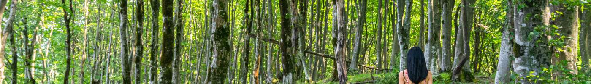

Bem-vindo à Limeira!
Limeira é uma cidade localizada no interior de São Paulo, famosa pela sua cultura, economia e, principalmente, pela qualidade de vida que oferece aos seus habitantes. Neste site, você encontrará informações sobre a cidade, bairros, pontos turísticos e muito mais.


Distância de Limeira
Saiba as distâncias de Limeira para outras grandes cidades, como São Paulo e Campinas.
Saiba mais

Pontos Turísticos
Explore os principais pontos turísticos de Limeira e descubra a beleza da cidade.
Ver Pontos TurísticosPopulação e Dados Demográficos
Descubra mais sobre a população e as características demográficas de Limeira.
Veja mais sobre a População